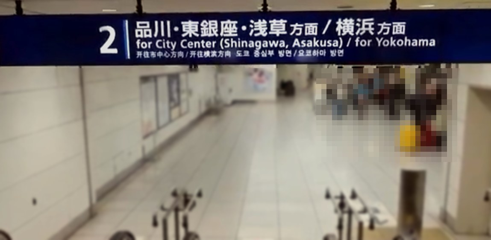
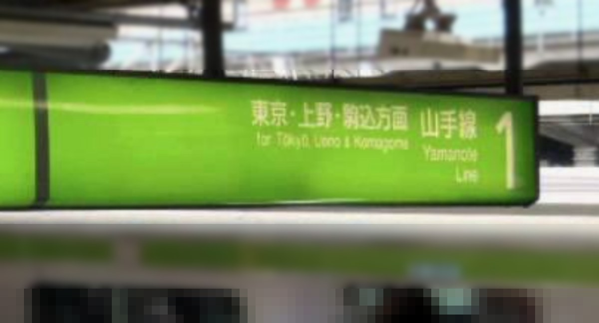
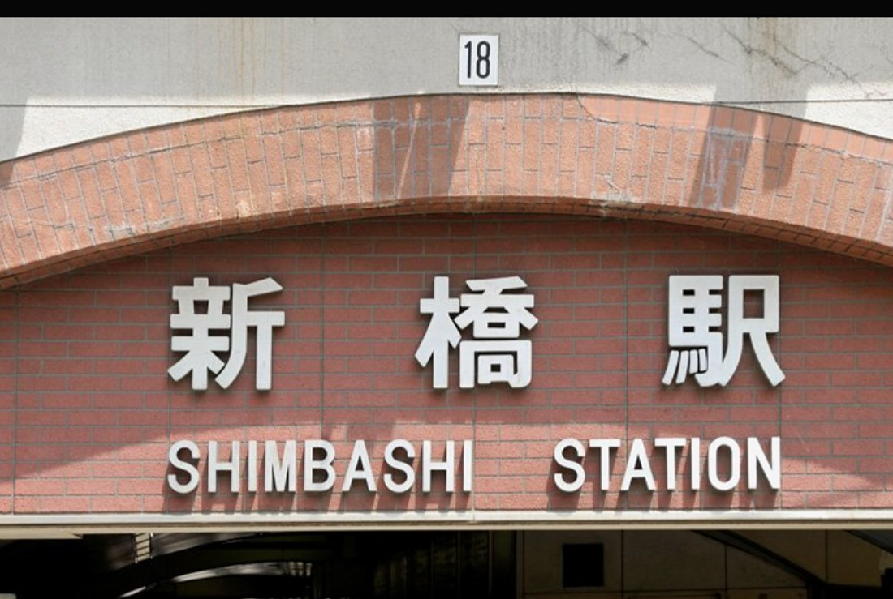
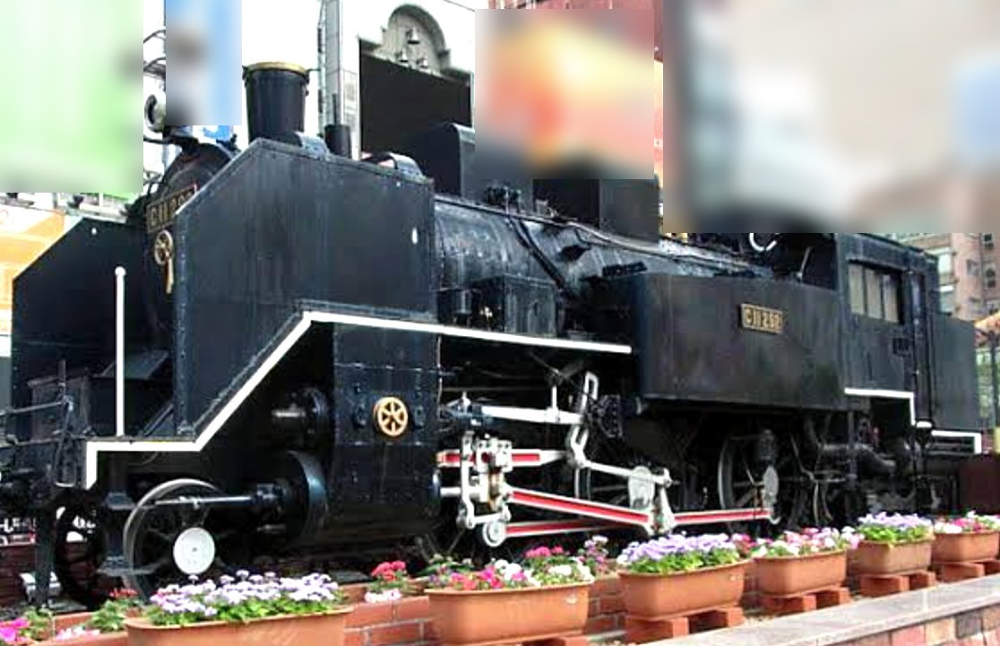
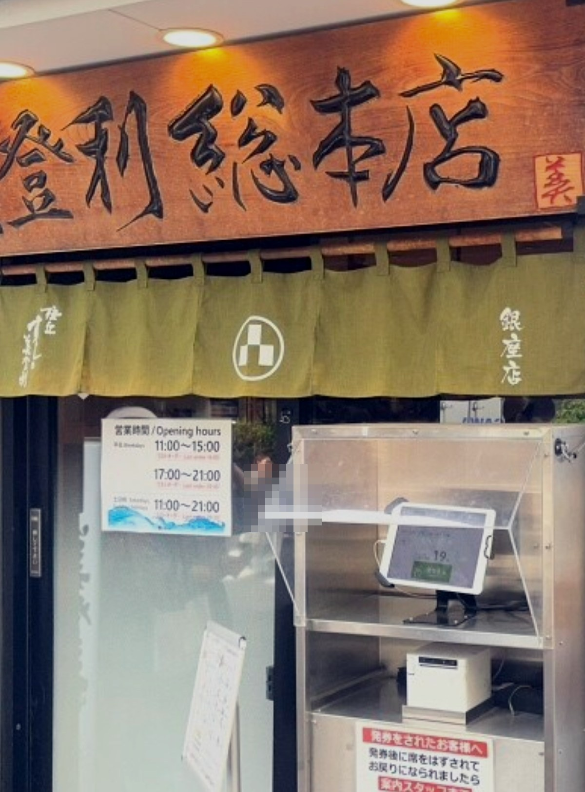
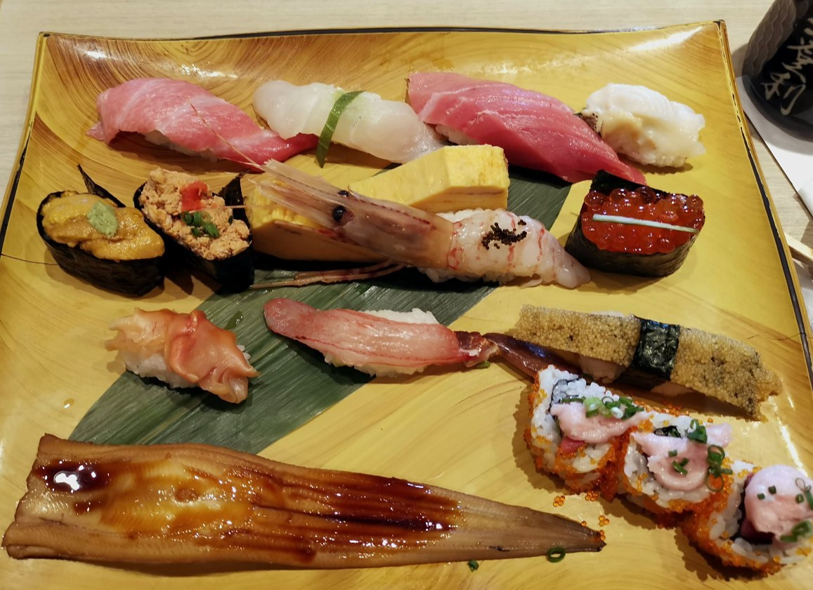

From Haneda Airport to Midori Sushi Ginza: A First-Day Route and Queue Guide
What this guide is for
This guide is for travelers visiting Japan. It shows how to get from Haneda Airport to a delicious sushi lunch in Ginza with fewer wrong turns, and how to handle the line at the restaurant, so you can start enjoying Tokyo on your first day.
The plan: take the train from Haneda Terminal 3 to Shimbashi, eat at Midori Sushi in Ginza, then walk around Ginza. On the route in this guide, you change to the Yamanote Line at Shinagawa. Where it helps, I added the wording on the signs and a photo. I walked this route myself, from Terminal 3 to Midori Sushi, on Wednesday, July 1, 2026. The queue tips come from my past visits, and the fares and times come from the sources listed at the end.
Before you start: get an IC card (optional)
Both the Keikyu Line and JR lines accept IC cards. You tap the card on the reader at the gate, so you do not have to buy a ticket each time. This guide lists IC fares next to the ticket fares. If you want a card, there are IC cards made for short-stay visitors:
- Welcome Suica (JR East): you choose 1,000, 2,000, 3,000, 4,000, 5,000, or 10,000 yen. There is no deposit. It is valid for 28 days from the purchase date, it cannot be refunded, and in principle each person can buy only one. At Haneda, JR East lists Haneda Airport Terminal 3 (Tokyo Monorail) Station as the place to buy it. That is not the Keikyu station, and I have not checked how far it is from the Keikyu gates, so you may not be able to buy it before entering them. Sales locations can change, so check JR East's page before you go.
- TOURIST PASMO: announced for May 2026. At Haneda Airport you can choose 1,000, 2,000, 3,000, 4,000, 5,000, or 10,000 yen, and the same amount is loaded on the card. There is no deposit, it is valid for 28 days, and it cannot be refunded. The announcement says it is sold at railway stations at Narita and Haneda airports. As of October 20, 2026, I have not confirmed on an official page that it is on sale now or which Haneda station sells it. It may not be available, so keep Welcome Suica or tickets as options.
How to use it: tap the card on the reader when you enter the gate, and tap again when you exit at your destination. The fare comes out of your balance automatically. You can top up a Welcome Suica with yen (credit cards cannot be used to top it up). Because the balance cannot be refunded, load only what you expect to use.
Step 1: Follow the blue sign to the Keikyu Line
After immigration and customs (general guidance, not something I recorded), you will come out into the 2nd floor arrivals lobby. Look for a blue sign. The sign I saw said "品川・東銀座・浅草方面／横浜方面" in Japanese and "for City Center (Shinagawa, Asakusa) / for Yokohama" in English. As you walk through the lobby, you will find several signs like this. Keep walking toward it and it will lead you to the Keikyu Line gates.
At Terminal 3, the Keikyu gates are split by direction (Haneda Airport official guide). The gate for central Tokyo and Yokohama is on the 2nd floor arrivals lobby. The gate for the Terminals 1 and 2 direction is a different gate, on Keikyu B2F. Signs for the Terminals 1 and 2 (domestic terminal) direction point the other way, so do not follow them.

The blue sign in the arrivals lobby, July 1, 2026Step 2: Ride the Keikyu Line to Shinagawa
Take the Keikyu Line to Shinagawa Station. The fare is 330 yen (327 yen with an IC card). Haneda Airport's guide says about 15 minutes to Shinagawa. GO TOKYO lists about 11 minutes on 快特 (kaitoku) and about 20 minutes on 特急 and 急行 trains, which stop at more stations. In Ekitan's late-night search (leaving at 22:28), the shortest ride was 20 minutes. Expect about 11 to 20 minutes depending on the train and time of day. English train names vary by source, so look for the Japanese name on the display.
Step 3: Transfer to the JR Yamanote Line at Shinagawa
At Shinagawa, go through the gate marked "JR transfer gate" (that was the label on the gate I used). When I went through, I was already inside JR Shinagawa Station. You take the stairs down to the platform (I have not checked whether there is an elevator). The Yamanote Line train toward Tokyo and Ueno (the inner loop) leaves from Platform 1 (according to Ekitan's station guide). Board the green Yamanote Line train there. The sign said "東京・上野方面" in Japanese and "for Tokyo, Ueno & Komagome" in English.
The transfer time depends on the crowd and how fast you walk. Allow extra time when the station is busy.

The Yamanote Line sign at Shinagawa, July 1, 2026Step 4: Get off at Shimbashi
Ride the Yamanote Line to Shimbashi Station. The ride takes about 9 minutes and costs 200 yen (199 yen with an IC card). Other JR lines (Tokaido, Keihin-Tohoku) also go to Shimbashi (Ekitan results), but this guide uses the Yamanote Line.

The Shimbashi Station sign, July 1, 2026Step 5: Use the Ginza Exit (not the SL Square side)
This is an easy place to go the wrong way. Shimbashi has a famous steam locomotive on display, called SL Square. It is on the west side of the station (the Karasumori Exit side), and it is not the exit you want. Midori Sushi is on the other side. Use the Ginza Exit instead. From the Ginza Exit, it is about a 5-minute walk (official). Midori Sushi also lists a 5-minute walk from Exit 5 of Shimbashi Station on the Tokyo Metro Ginza Line.

SL Square. This is NOT your exit. July 1, 2026Copy and paste this address into Google Maps: 〒104-0061 東京都中央区銀座8-3 先 東京高速道路山下ビル1F (Midori Sushi Ginza is on the ground floor under the elevated expressway.)
Step 6: Get your waiting ticket at Midori Sushi Ginza
At the entrance there is a ticket machine. When I used it on July 1, the screen had a language switch (I have not checked which languages are supported). I chose a table or counter seat and my party size, and it printed a numbered ticket.
Important: on weekdays the restaurant is on a break from 15:00 to 17:00 and is closed during that time. If you arrive in that window, you cannot eat there.
A few things to know, from the restaurant's official page: - Waiting tickets start at 10:00 a.m. - As of October 20, 2026, you cannot join the line from your smartphone. You need to use the machine at the entrance. - Weekdays: 11:00-15:00 (last order 14:00), break 15:00-17:00, then 17:00-21:00 (last order 20:30). Weekends and holidays: 11:00-21:00 (last order 20:30). - If the restaurant decides you cannot be seated before last order, it may stop handing out tickets early. - The regular closing day is January 1. There are also occasional closing days (the official notice listed one on October 14), so check the official page before you go. - The official page has a button to reserve a seat (TableCheck). I have not checked what a reservation includes (for example, whether it lets you skip the line) or which time slots apply, so read the page before you go.

The ticket machine at the entrance, July 1, 2026How long should you wait? (from my past visits, more than once; not an official rule)
- If fewer than 10 groups are ahead of you, I think waiting right there is the smart choice.
- If 20 or more groups are ahead of you, you often have about 40 to 50 minutes to spare. If your hotel is nearby, you can use that time to drop your bags, check in if possible, and take a short walk in Ginza.
- If your number has already been called, I have been seated after coming back about 20 minutes late by showing my ticket to the staff. This is not the restaurant's rule, and it may not work every time. I could not find it on the official page.

The sushi, July 1, 2026Step 7: What to do with your luggage
This step is a suggestion. I did not go to a hotel on July 1.
- If your hotel is in Ginza, close to Midori Sushi: take your ticket, drop your bags at the hotel, check in if the hotel allows it, and then come back for lunch. Hotel check-in times vary, so ask your hotel. After eating, walk around Ginza and return to your hotel.
- If your hotel is far away, or you have not decided yet: bring your luggage with you. I have seen people with suitcases set them at the edge of the restaurant several times. This is not an official rule, so please ask the staff when you enter.
Step 8: Walk Ginza on the pedestrian paradise (weekends and holidays)
Ginza's main street, Chuo-dori, closes to cars on Saturdays, Sundays, and national holidays. The hours are: - October to March: 12:00-17:00 - April to September: 12:00-18:00
It can be canceled in bad weather or around the New Year holidays (Tokyo Metropolitan Police). It does not run on weekdays. July 1, 2026, the day I walked, was a Wednesday, so it was not running.
Quick summary
| Step | Time | Cost |
|---|---|---|
| Haneda Terminal 3 to Shinagawa (Keikyu) | about 11-20 min (varies by train and time) | 330 yen (IC 327 yen) |
| Transfer at Shinagawa | a few minutes (varies with crowds) | - |
| Shinagawa to Shimbashi (Yamanote) | about 9 min | 200 yen (IC 199 yen) |
| Shimbashi Ginza Exit to Midori Sushi | about 5 min on foot | free |
| Total fare, Terminal 3 to Shimbashi | - | 530 yen (IC 526 yen) |
In Ekitan's late-night search (leaving Terminal 3 at 22:28), the whole rail trip to Shimbashi took 32 to 39 minutes depending on the JR line, including a wait at Shinagawa. Daytime times will differ. Fares and times were checked on October 19-20, 2026 and may change.
Another route (not tested)
There is also a Keikyu through-train (エアポート快特, "Airport kaitoku"; look for the Japanese name on the display) that runs onto the Toei Asakusa Line and stops at Shimbashi, according to route maps. I have not ridden it and have no first-hand details to share. On Ekitan, Terminal 3 to Shimbashi shows 510 yen (IC 505 yen), with one transfer at Sengakuji in a late-night search. That is slightly cheaper than the route in this guide (530 yen, IC 526 yen). I have not checked whether a train without a transfer runs in the daytime, the travel time, or the exit at Shimbashi, so check the current timetable before you choose it.
Sources (checked 2026-10-19 to 2026-10-20)
- Haneda Airport official: https://tokyo-haneda.com/access/train/
- Ekitan, Haneda Terminal 3 to Shinagawa: https://ekitan.com/transit/fare/sf-9624/st-2236
- Ekitan, Haneda Terminal 3 to Shimbashi: https://ekitan.com/transit/fare/sf-9624/st-2354
- Ekitan, Shinagawa to Shimbashi: https://ekitan.com/transit/fare/sf-2236/st-2354
- GO TOKYO (Terminal 3 to Shinagawa time, updated 2026-09-01): https://www.gotokyo.org/jp/plan/airport-access/haneda-airport/
- Ekitan, Shinagawa Station platforms: https://ekitan.com/transit/article/station/shinagawa
- JR East press release on Shinagawa platforms (2019, a plan): https://www.jreast.co.jp/press/2018/tokyo/20190226_t01.pdf
- JR East, Welcome Suica (purchase): https://www.jreast.co.jp/en/multi/welcomesuica/purchase.html
- Bureau of Transportation, Tokyo Metropolitan Government (TOURIST PASMO announcement): https://www.kotsu.metro.tokyo.jp/pickup_information/news/subway/2026/sub_p_2026041712638_h.html
- Midori Sushi Ginza (official): https://www.sushinomidori.co.jp/shops/ginza/
- Tokyo Metropolitan Police (pedestrian paradise): https://www.keishicho.metro.tokyo.lg.jp/kotsu/doro/hoko.html
- Ginza official: https://www.ginza.jp/townguide/pedestrian-zone
- Minato City (SL Square location): https://www.city.minato.tokyo.jp/shibachikusei/shiba/koho/documents/shiba10.pdf